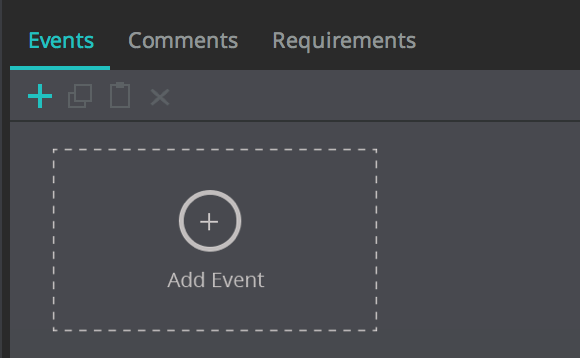
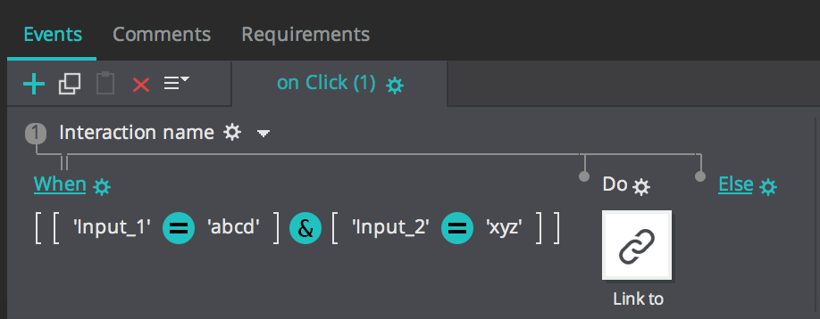

# Lab - JustinMind Exercises
Lab exercises to help you master the subject material and to complement the lecture material for Introduction to Interaction Design (F27ID).
#Overview
Working with JustinMind software (Wireframing)
# Exercise 1
Goal: Use the events tab to control transition between Screens (based on a specific input criterion or otherwise).
Steps:
* 1. Create a new prototype (web based) with two Screens: Screen 1 and Screen 2
* 2. Include an input text field and button in Screen 1
* 3. Include a label in Screen 2 with message: “Successful”
Main Aim: Screen 1 will transition to Screen 2 only when the text “abcd” is present in the text box
* 4. Single click on the button and access the Events Tab towards the bottom of the Software window and click on Add Event (see image below)

* 5. Choose option Link to External Screen (Screen 2) and click on the When add condition tab on the top of the screen (see image below)
* 6. Drag the input text field in the top bar in the screen and add “=” and “abcd” as in the image below:
* 7. Press OK and then press the simulate button and to test your prototype (remember to select Screen 1 before pressing simulate)
* 8. Now try extending this scenario to having another input text field and setup the condition that Screen 1 will transition to Screen 2 on the click of the button when one text box has input “abcd” and the other “xyz”. In conclusion that will be your first basic login screen (see solution below).

* 9. Screens can also be linked by simply dragging and dropping widgets in the Screen List window (as seen below). Drag a new button in Screen 1 on top of Screen 2. That should link the widget in Screen 1 to Screen 2. Press the simulate button to try your prototype (again after selecting Screen 1). Right clicking on a widget provides a link option that accomplishes the same; essentially as a hyperlink would.
# Exercise 2
Goal: Data Forms and using variables
* 1. Create a new prototype (web based) with two Screens: Screen 3 and Screen 4. Given in the picture below is Screen 3 (Screen 4 will be explained later).
* 2. Goal: To enable the user to use the tab key to move from the first text box to the second text box
* 3. Click on the First text box and press on the Events Tab and then Add Event as in Exercise 1
* 4. Chose the option on keydown and enter the TAB key as in the picture below (I could not take a correct snapshot as the word TAB disappears in the When Key text box) – the word TAB will appear when you press TAB
* 5. Select the set focus on option as in the image below and choose the second text box as the target of the focus. Select Screen 3, Press the simulate button and now you should be able to use the TAB button to move to the second text box.
* 6. Goal: To simulate a simple welcome message based on the user’s first name
* 7. Now create Screen 4 with two labels (first label says Welcome and the second label is blank).
* 8. Link the login button of Screen 3 to Screen 4.
* 9. Go to the variables panel on the bottom right of the software screen – create a new variable User_First_Name
* 10. Now drag the first text input field of Screen 3 on top of the Variable. This will simply let Just in mind associate the value of the variable User_First_Name to the text input field. Then drag the variable on top of the second label in Screen 4. When you simulate Screen 3, the first name of the user should appear in the welcome message in Screen 4 after the Login Button is pressed in Screen 3 (see image below)
Now try to repeat the same process for first and last name together (is there a better way to do it then using two variables for first name and last name separately)?
# Exercise 3
Using all the skills you have learnt in the first two exercises, design a simple interface where when you enter your first name and your last name in two text input fields, a third text field with your student ID is populated automatically when you press TAB after finishing entering your last name in the second text field.
An online tutorial is provided that explains how text fields can be automatically populated: https://www.justinmind.com/support/autopopulate-text-fields-in-your-interactive-wireframes/
# Exercise 4 – Designing an Application
Using the templates provided for iPhone, attempt to recreate the following wireframes for a Restaurant app (it is all hypothetical: choose the name, the food, the location etc)
* Wireframe 1: Menu (main menu of website, not restaurant menu)
* Wireframe 2: Address, Maps, Location, Contact info
* Wireframe 3: Opening Hours
* Wireframe 4: Make an online Booking
Remember to link Wireframes 2,3,4 with Wireframe 1 through buttons or menu options
# Further Just in Mind
As you can see Just in mind is a fairly powerful tool. Just in mind can also be used to simulate a database or records of data. As part of this week’s lab, you will attempt to showcase the use of a datamaster. Think of a datamaster has a repository of data related to your prototype or application. Data in a datamaster can be visually displayed in a data list. This data can in real time (that is while you are simulating your prototype) be extended, edited or deleted via the datamaster.
As part of this weeks’ lab exercise, try to follow the example links to archive the basic functionality (add, modify, and delete) and later please attempt to simulate the functionality of a datamaster for your project application (possible scenarios could be: maintaining user profiles, a message board functionality, admin viewing and editing data, or what suits the best). You must showcase the working of all three buttons (add, modify and delete). This exercise will help you to prepare your prototypes for the final coursework (mainly, convert the paper-based prototypes to the tool-based prototypes).
## An example for your help is given below,
The following links will help you achieve this:
* 1. Creating Data Masters: https://www.justinmind.com/support/how-to-create-and-populate-a-data-master-in-your-interactive-prototypes/
* 2. Linking data masters and data lists so that data lists can display data entered via a data master: https://www.justinmind.com/support/how-to-display-data-master-records-in-a-data-list-in-your-web-prototypes/
* 3. Adding, modifying and deleting data via a datamaster: https://www.justinmind.com/support/operations-with-data-masters/
Some other useful/interesting links:
* 1. YouTube Just in mind Channel: https://www.youtube.com/channel/UCiVANwKD7JdJ6LXaD8j2wqA/videos
* 2. Data Grids and Data masters: https://www.youtube.com/watch?v=8sg7RPLxBeQ (make sure you know when to use a data grid over a data list, they are quite similar though)
* 3. Some of you have asked me about Slide menus: https://www.youtube.com/watch?v=MypQIV4Ddbg